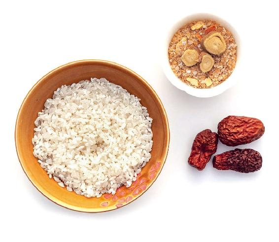
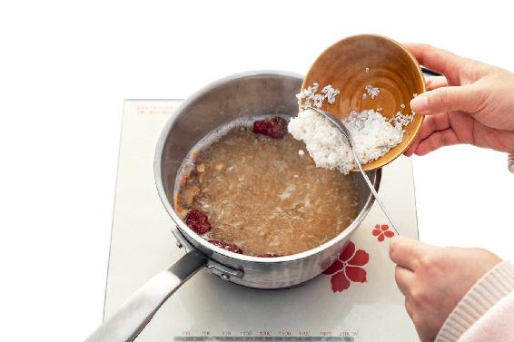
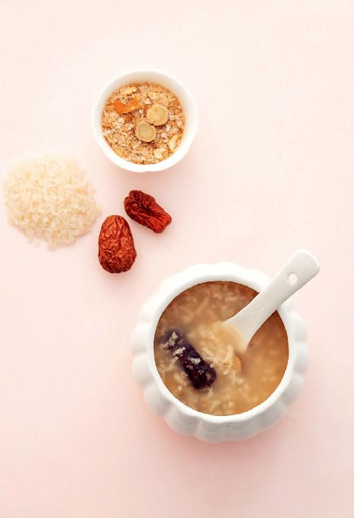

春天是人的情绪容易波动的时节，所以古人见落花都会感伤——“满目山河空念远，落花风雨更伤春。不如怜取眼前人。”
民间俗话也说：“菜花黄，痴子忙。”春天花开的时节，人的心情也浮动了，一些精神、心理疾病也容易加重。例如，著名诗人海子就是因抑郁症发作而在春天辞世的。
首先，就是持续性的，对任何事情都没兴趣，觉得没力气，什么事都干不了。就像有人说的，连刷牙都没力气。这种现象可能会持续一个星期、两个星期。
其次，身体也出现了一些变化。比如，没有什么食欲，不想吃东西；早上会提前两小时醒过来，之后就再也睡不着了，这是一个很典型的表现。如果出现这种情况，又不是失眠症的话就要特别注意。
有些人不是所有时候都显得情绪低落，有时候会显得很亢奋，做事情反应很快、很积极，工作起来非常拼命。但过一段时间，突然间就什么都不想干了，这种情况反复交替地出现。
很多情况下，得抑郁症都有诱发因素，有的人是因为失业，或者工作压力大，或者是生活中发生一些大事，比如亲人去世了，自己得大病了、离婚、破产了，等等。这些都可能引起抑郁症。
有些朋友可能想：“我有时候心情也不好啊，这是不是就是抑郁了呢？”
其实，识别到底是心情不好还是抑郁，有一个很本质的区别。正常的人心情不好，通常是由一个事件引起的，比如，小孩子做错事受到家长批评，学生考试没考好，等等。这种心情不好，通常都是暂时的，引起心情不好的事件过去了，或者换了一个环境，被人开导一下，情绪就转好了。这不是抑郁。
通常来说，抑郁是无缘无故的，哪怕是诱发情绪低落的事件已经过去了，患者的心情还是不能转好。没有原因地心情不好就有可能是抑郁了。
老年人得抑郁症，一般来说发病是在60岁以后，会伴有记忆力的明显下降，有时候还会幻听，或者出现幻觉，或者妄想。这些症状已经和一个正常人心情不好有本质区别了。
最好是在出现抑郁倾向，但还没有发展成抑郁症的时候就及时地调理。
很多的人，没到病的程度，但也受到严重心理压力的困扰，精神紧张，食不甘味，寝不安席，由于焦虑和压力而睡不好觉。出现这些情况，不要想着是情绪问题就无能为力，其实是可以从身体上来调理的。
其实，人的心理和生理是密不可分的，一个人出现了心理上的问题，往往也是因为身体的健康先出现问题。
当您看到家人或者朋友的性格突然变化，首先不要责怪这个人的脾气变坏了，而要先想到是不是他的身体出了问题。最好及时地跟对方聊一聊，如果真的是身体出现了问题，要尽快带他到医院看医生。
对待我们自己也是这样。不要总觉得心理问题不好意思告诉别人，千万不要有这样的想法。一个人一旦出现了心理问题，可能不是他自己能控制解决的，也不是以自己的意志为转移的，往往是因为身体上先出现了健康问题，这个时候真的需要外力的帮助才可以解决。2017年世界卫生日的口号叫“一起来聊聊抑郁症”，这是大有深意的。
如果一个人有了抑郁倾向，或者被诊断为抑郁症，或者是有其他的心理疾病，谈话是打开患者心结的第一步。
更重要的是帮助患者调理身体，因为身体健康与否会影响心理状态，心理状态反过来又会影响身体健康，这是一个循环，可以是恶性的，也可以是良性的。所以，通过调理好身体，就能调理好心理上的问题。
对于抑郁，中医里其实早就有一个很好的方子。1800多年以前，医圣张仲景就开出了一张千古名方——甘麦大枣汤。这个方子只有三味药，但它却有着神奇的疗效，不仅可以调理抑郁症，还可以调理精神紧张，缓解心理压力。
从古到今，用这个方子治好的病例不计其数。到现在，这个方子仍然被广泛地应用，包括在国外也有很多人在用。
甘麦大枣汤中的三味药，有两味药都是食物，所以这个汤是非常平和的。但它的效果却不是一般的好，除了能治病，还有保健的作用。
我把它稍微调整成了一个养生的粥来食用。不仅适用于有抑郁倾向的朋友，也适用于平时心理压力特别大、精神紧张、容易焦虑的朋友。每年的春天和秋天，是抑郁症和焦虑症病情容易加重的时期，此时都可以喝这道粥。
甘麦大枣粥

原料：小麦50克，大枣9个，甘草9克、大米。

做法：
把大枣掰开，然后和小麦、甘草、大米一起放入电饭煲或者锅里，加水把它们熬成粥。
允斌叮嘱：
1. 这道粥一天中什么时间喝都可以。
2. 如果您想让它起到更安神的作用，那就在每天晚餐时把它当成主食来吃。
1.不抑郁
甘麦大枣粥不仅可以调理心理的紧张、抑郁、焦虑，还可以养心、安神。
2.改善不正常的早醒，让人安心、镇定
喝这道粥对睡眠是有帮助的，特别是对有抑郁倾向的人。
有抑郁倾向的人通常会早醒——早上会提前两小时醒过来，然后就再也睡不着了。这样的症状，喝甘麦大枣粥能很好地改善，而且喝这道粥是能够让人的情绪镇定下来的。
3.调理女性更年期综合征
甘麦大枣粥对女性的更年期综合征也有帮助。其实，处于更年期的女性很容易有严重的心理问题，可能表现为情绪反复无常、烦躁；有时候觉得很悲伤，想哭；还有容易阴虚，会经常出虚汗。这些情况喝这个粥都可以改善。

4.改善经前紧张症
女性在生理期之前，常常会产生经前紧张症——情绪突然变得很坏，莫名其妙地发脾气，或是情绪低落。
经前紧张症是典型的由身体问题引起的心理问题，一旦生理期过后，就恢复正常了。遇到这种情况，您可以喝这道粥来调理。
5.调理小儿多动症
有些小朋友平时总爱动，静不下来，一坐在椅子上就扭来扭去的，上课注意力不集中。
遇到这种情况，有些家长就会指责孩子。其实，这种行为可能并不是孩子自身能控制的，有可能是多动症或者营养不良的一种表现。
现在有很多孩子胃口非常好，但营养不均衡，这就容易出现多动症。喝这道粥，在饮食上就可以起到一个辅助调理的作用。
6.减压，调理神经衰弱
还有些朋友可能是由于考试或者工作的压力太大，导致神经衰弱，引起了严重的失眠。对此，喝这道粥也有一定的辅助调理作用。
制作这道粥所需的小麦，您可以到超市买，小麦是要整粒的，不是磨好的小麦粉。
您也可以到中药店去买，但药店卖的都是浮小麦——干瘪的麦子。浮小麦也是可以用的，只是喝起来不那么好喝。
请记住，千万不要买成大麦。
有一点需要读者朋友们明确，这是我把甘麦大枣汤的方子调整后，用于家常食用的粥，适用于平时有一些心理上小问题，或者某段时间有伤春悲秋情绪的朋友。如果您真的已经确诊为心理疾病，比如，多动症、抑郁症，还是要去医院治疗。这道粥可以作为您平时饮食上的调理辅助。
当然，如果您想加强这道粥的效果，可以把甘草的量上调到20~30克；小麦就用从中药房买的浮小麦。这样就是功效更强大的甘麦大枣汤了。
以上这些用量的变化，您最好先跟医生沟通一下，听听医生的意见之后再来决定。
如果您只是想在生活中调理和预防的话，可以用刚才的配方，也就是小麦50克、大枣9个和甘草9克。
一位读者曾经写了一封很长的信，说她表妹患抑郁症的事。她在信中说到，她的表妹从小生活在单亲家庭中，还不到20岁就结婚了。在她怀孕的第七个月，她的母亲突然去世了，这对她的打击非常大。
后来，虽然她顺利生了宝宝，但自此就患了严重的产后抑郁症。当时，她的家人包括她自己不懂什么是抑郁症，家人只知道这人生了孩子后性格变了。
孩子生下来几个月后，她每天都失眠，总是出现想自杀的念头。那段时间她非常痛苦，但全家没人能理解。
三年后，她又生了第二个孩子。在孩子半岁的时候，她又出现了失眠、胸闷这些症状，记忆力也减退了，她又产生了自杀的念头。
但这些问题她都没有告诉家人，事后多年才说的。当时她的家人就带她去了医院，因为他们觉得这可能是一种病。到了医院，她被诊断为抑郁症。
确诊后的那段时间，她吃了很多药，可能是用药不当，她把胃给吃坏了，经常胃疼，没办法只好把药停了。
为了治疗抑郁症，她前前后后去了很多家医院，吃了各种各样的药，其间病情时好时坏，持续了五六年。
这位读者说，她是无意中看到了《吃法决定活法》里讲的甘麦大枣粥，当时就推荐给自己的表妹，让她经常吃。甘麦大枣粥对胃是没有伤害的，反而对胃还有保护的作用。
她表妹吃甘麦大枣粥两个星期后，就能好好地睡觉了。慢慢地，她表妹的身体就变好了。后来，她又让表妹早上配合吃银耳羹，皮肤也慢慢地变好了。恢复健康的表妹，这时候才把她五六年前患病时的一些情况说了出来。
之前，她的家人只是知道她有很多问题，但具体情况，因为表妹没有说，大家都不是很清楚。
这是抑郁症患者的一个普遍现象，就是不愿意与人谈论，常常把自己封闭起来。这位读者的表妹喝了这道粥，慢慢恢复健康以后，心结才慢慢打开了。这个时候，她才跟家人、朋友谈论一些患病的细节。
我还收到过一些读者的留言，说喝了这道粥以后，觉得对自己的心理和身体都有很好的调理作用，留言表示感谢。
其实，真的不要来感谢我。这是我们医圣张仲景的千古名方，我只是把这个方子进行化裁，调整成了一个养生的粥品。如果说要感谢，真正要感谢的是医圣，感谢世世代代以来很多中医界的大师，是他们给我们留下了这么好的东西。
我们一定要记住，不管是抑郁症也好，有抑郁倾向也好，心理上的任何问题一定要跟家人谈论，跟医生谈论，向医生寻求帮助，运用谈话疗法、药物疗法，这些疾病都是可以治愈的。
在生活中，如果我们想用饮食来辅助调理，完全可以从我们祖先留下的这些传统的东西中寻找到良方。
读者评论：喝了甘麦大枣粥，睡了个好觉
薇羽：好朋友更年期，抑郁到每天下午哭一次,喝了甘麦大枣粥，好了，现在每天都美滋滋的，神奇！
徐姐：昨晚喝了甘麦大枣粥，睡了个好觉，已有两个晚上没睡好的我，真开心。
韩豆豆：陈老师，我以前长期浅睡眠，多梦，做的梦记得很清楚，总起夜，心里有事的时候就失眠，白天也没精神。喝了一周甘麦大枣粥，加了百合、酸枣仁，现在可以睡到早晨7点。
允斌解惑：更年期的女性和工作压力大的男性可以喝甘麦大枣粥吗？
张辛华：请问老师小麦是浮小麦吗？
允斌：用浮小麦或麦麸更好。
Vivian：老师，您这个方子的材料有没有特殊要求，比如，普通的大枣就可以，还是要去药房拿？小麦是普通的麦子吗？
允斌：普通的红枣就可以，小麦用浮小麦。
大华英：请问更年期的女性和工作压力大的男性可以用吗？
允斌：可以的。
风和日丽：青少年总是不开心，郁闷，对什么都没有兴趣，心里难受，抑郁，但睡眠没问题。可以喝这个吗？
允斌：可以的。